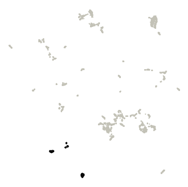
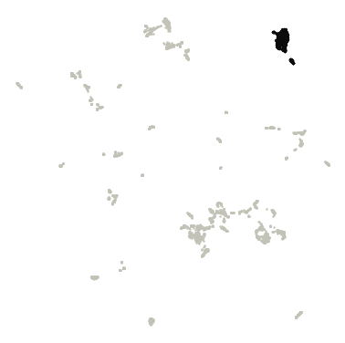
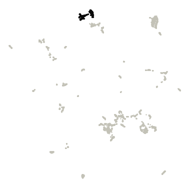
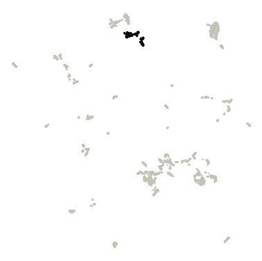
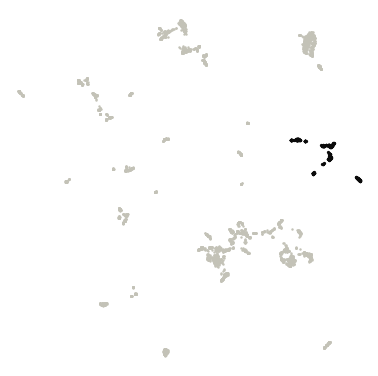
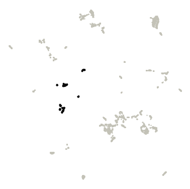
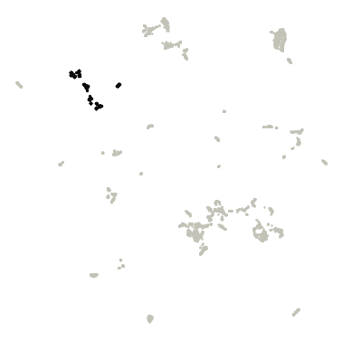
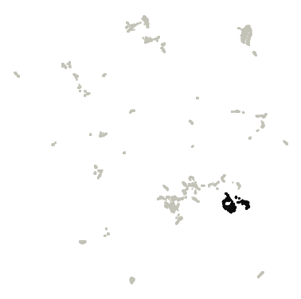
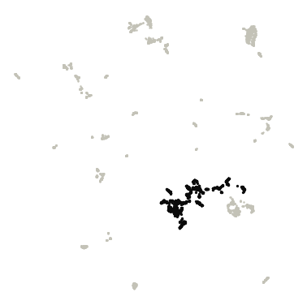

Gut
Gut genomes (UHGG v2.0.2 species-representative genomes) shown two ways: by their DNA sequence (DNABERT-S embeddings) and by their gene content (eggNOG gene families), each with its own clusters.
DNA-embedding map (DNABERT-S)
Genomes are placed by DNABERT-S embeddings of their DNA sequence, so genomes with similar sequence composition sit close together. Treat it as a visual impression of genetic similarity, not a measure of evolutionary distance.
Hover a point for its details. Click a legend entry to hide it; double-click to show only that entry (double-click again to show all). Drag to zoom; double-click the plot to reset. Grey points are outliers that HDBSCAN did not assign to any cluster. Open full screen.
Clusters were consistent across random runs. Across 5 runs with different random seeds, the map gave 6-6 clusters (mean agreement 0.99, lowest 0.98; Adjusted Rand Index).
| Cluster | Genomes |
|---|---|
| Cluster 0 | 564 |
| Cluster 1 | 330 |
| Cluster 2 | 283 |
| Cluster 3 | 502 |
| Cluster 4 | 791 |
| Cluster 5 | 2,019 |
| Outliers | 255 |
Functional map (eggNOG gene families)
Here genomes are placed by what their genes do. Each genome is described by the relative abundance of 7,584 eggNOG gene families (each family's share of the genome's genes), and genomes with similar profiles (Bray–Curtis dissimilarity) sit close together.
Hover a point for its details. Click a legend entry to hide it; double-click to show only that entry (double-click again to show all). Drag to zoom; double-click the plot to reset. Grey points are outliers that HDBSCAN did not assign to any cluster. Open full screen.
Clusters were mostly consistent across random runs; boundaries may shift slightly. Across 5 runs with different random seeds, the map gave 7-9 clusters (mean agreement 0.77, lowest 0.56; Adjusted Rand Index). Agreement between these functional clusters and the DNA-embedding clusters: Adjusted Rand Index 0.46 (1 = identical groupings, 0 = unrelated), computed on the 88% of genomes that are in a cluster on both maps.
Top 10 COG gene families in each functional cluster
How they are chosen. Enrichment is the mean relative abundance of a COG family in the cluster's genomes divided by its mean in all other clustered genomes of this view. Only families present in at least 10% of the cluster's genomes are ranked, so one-off genes can't top the list. "In this cluster" is the share of the cluster's genomes carrying the family. The ranking is descriptive; no per-cluster test is applied. 322 outlier genomes are excluded. The top 50 per cluster are in functional_cluster_top_cog_terms.csv.

Cluster 0 · 327 genomes
| COG | Description | Enrichment | In this cluster | In other clusters |
|---|---|---|---|---|
| COG1543 | Belongs to the glycosyl hydrolase 57 family | 74× | 32% | <1% |
| COG3330 | Domain of unknown function (DUF4912) | 73× | 33% | <1% |
| COG3360 | Dodecin | 58× | 25% | <1% |
| COG5663 | Belongs to the 5'(3')-deoxyribonucleotidase family | 53× | 54% | 3% |
| COG4903 | Competence transcription factor | 41× | 40% | 2% |
| COG4043 | ASCH | 31× | 33% | 2% |
| COG1986 | Phosphatase that hydrolyzes non-canonical purine nucleotides such as XTP and ITP to their respective… | 30× | 29% | 4% |
| COG4969 | cell adhesion | 26× | 40% | 11% |
| COG1379 | DNA helicase | 25× | 33% | 3% |
| COG4843 | Uncharacterized protein conserved in bacteria (DUF2179) | 21× | 23% | 4% |

Cluster 1 · 629 genomes
| COG | Description | Enrichment | In this cluster | In other clusters |
|---|---|---|---|---|
| COG4646 | Protein of unknown function (DUF2958) | 78× | 14% | <1% |
| COG5265 | ATP-binding cassette subfamily B | 54× | 84% | 2% |
| COG2852 | Protein of unknown function (DUF559) | 45× | 99% | 11% |
| COG3883 | PFAM NLP P60 protein | 39× | 96% | 6% |
| COG5606 | Helix-turn-helix domain | 39× | 34% | 1% |
| COG2222 | sugar isomerase, AgaS family | 37× | 98% | 17% |
| COG3116 | cell division | 33× | 96% | 4% |
| COG3260 | NADH ubiquinone oxidoreductase, 20 | 31× | 88% | 8% |
| COG3261 | Respiratory-chain NADH dehydrogenase, 49 Kd subunit | 30× | 89% | 10% |
| COG1848 | PIN domain | 26× | 83% | 6% |

Cluster 2 · 320 genomes
| COG | Description | Enrichment | In this cluster | In other clusters |
|---|---|---|---|---|
| COG4520 | Psort location CytoplasmicMembrane, score 9.46 | 133× | 66% | <1% |
| COG4797 | Motility related/secretion protein | 55× | 58% | <1% |
| COG2335 | Beta-Ig-H3 fasciclin | 49× | 38% | 2% |
| COG3712 | Domain of unknown function (DUF4974) | 37× | 81% | 7% |
| COG1730 | unfolded protein binding | 21× | 43% | 2% |
| COG3489 | Psort location CytoplasmicMembrane, score | 18× | 61% | 3% |
| COG3488 | Di-haem oxidoreductase, putative peroxidase | 17× | 71% | 3% |
| COG3746 | phosphate-selective porin O and P | 15× | 95% | 7% |
| COG3401 | cell wall organization | 15× | 31% | 2% |
| COG4121 | Psort location Cytoplasmic, score | 15× | 47% | 2% |

Cluster 3 · 301 genomes
| COG | Description | Enrichment | In this cluster | In other clusters |
|---|---|---|---|---|
| COG1747 | Gliding motility protein | 103× | 52% | <1% |
| COG4068 | Uncharacterized protein containing a Zn-ribbon (DUF2116) | 65× | 13% | <1% |
| COG3823 | Glutamine cyclotransferase | 32× | 33% | 1% |
| COG0478 | Lipopolysaccharide kinase (Kdo/WaaP) family | 28× | 19% | <1% |
| COG4360 | Domain of unknown function (DUF4922) | 25× | 30% | 2% |
| COG0023 | Translation initiation factor SUI1 | 19× | 89% | 8% |
| COG3876 | Protein of unknown function (DUF1343) | 18× | 76% | 8% |
| COG1899 | peptidyl-lysine modification to peptidyl-hypusine | 17× | 15% | <1% |
| COG4704 | Fibrobacter succinogenes major domain (Fib_succ_major) | 17× | 95% | 8% |
| COG5107 | Domain of Unknown Function (DUF349) | 16× | 89% | 7% |

Cluster 4 · 365 genomes
| COG | Description | Enrichment | In this cluster | In other clusters |
|---|---|---|---|---|
| COG4814 | Alpha/beta hydrolase of unknown function (DUF915) | 439× | 43% | <1% |
| COG4473 | ABC transporter | 306× | 68% | <1% |
| COG5503 | Belongs to the UPF0356 family | 305× | 61% | 0% |
| COG4476 | Belongs to the UPF0223 family | 299× | 63% | 0% |
| COG5506 | Protein of unknown function (DUF1694) | 290× | 55% | 0% |
| COG5353 | Protein conserved in bacteria | 271× | 59% | 0% |
| COG4483 | Bacterial protein of unknown function (DUF910) | 264× | 56% | 0% |
| COG4471 | Uncharacterized protein conserved in bacteria (DUF2129) | 260× | 68% | <1% |
| COG4479 | Belongs to the UPF0346 family | 256× | 56% | <1% |
| COG4858 | Protein of unknown function (DUF1129) | 222× | 61% | <1% |

Cluster 5 · 375 genomes
| COG | Description | Enrichment | In this cluster | In other clusters |
|---|---|---|---|---|
| COG5282 | hydrolase | 187× | 32% | <1% |
| COG1507 | Septum formation initiator family protein | 173× | 32% | <1% |
| COG3429 | Glucose-6-P dehydrogenase subunit | 144× | 24% | 0% |
| COG0638 | Catalyzes the covalent attachment of the prokaryotic ubiquitin-like protein modifier Pup to the proteasomal… | 134× | 30% | <1% |
| COG1938 | PAC2 family | 94× | 21% | <1% |
| COG5468 | Lipopolysaccharide-assembly | 94× | 13% | <1% |
| COG4765 | protein conserved in bacteria | 83× | 13% | <1% |
| COG3750 | Uncharacterized protein conserved in bacteria (DUF2312) | 82× | 13% | <1% |
| COG3820 | protein conserved in bacteria | 78× | 12% | <1% |
| COG3281 | Trehalose synthase | 78× | 15% | <1% |

Cluster 6 · 349 genomes
| COG | Description | Enrichment | In this cluster | In other clusters |
|---|---|---|---|---|
| COG3539 | Fimbrial protein | 1,881× | 44% | <1% |
| COG4566 | helix_turn_helix, Lux Regulon | 783× | 55% | <1% |
| COG2916 | Belongs to the histone-like protein H-NS family | 362× | 66% | 0% |
| COG3113 | STAS domain | 319× | 78% | 0% |
| COG2969 | Stringent starvation protein B | 313× | 79% | 0% |
| COG2917 | probably involved in intracellular septation | 309× | 79% | 0% |
| COG2924 | Could be a mediator in iron transactions between iron acquisition and iron-requiring processes, such as… | 290× | 75% | 0% |
| COG2901 | Activates ribosomal RNA transcription. Plays a direct role in upstream activation of rRNA promoters | 289× | 74% | 0% |
| COG2863 | Cytochrome c | 286× | 51% | <1% |
| COG2980 | Together with LptD, is involved in the assembly of lipopolysaccharide (LPS) at the surface of the outer… | 285× | 81% | <1% |

Cluster 7 · 483 genomes
| COG | Description | Enrichment | In this cluster | In other clusters |
|---|---|---|---|---|
| COG4636 | Putative restriction endonuclease | 19× | 46% | 3% |
| COG1655 | Uncharacterized protein conserved in bacteria (DUF2225) | 14× | 26% | 2% |
| COG3044 | Psort location Cytoplasmic, score 8.87 | 12× | 66% | 4% |
| COG4805 | protein conserved in bacteria | 11× | 90% | 5% |
| COG3359 | Predicted 3'-5' exonuclease related to the exonuclease domain of PolB | 11× | 75% | 5% |
| COG4717 | Psort location Cytoplasmic, score 8.87 | 10× | 63% | 5% |
| COG1406 | Hemerythrin HHE cation binding domain | 10× | 24% | 3% |
| COG2602 | Psort location CytoplasmicMembrane, score | 10× | 40% | 3% |
| COG1728 | Protein of unknown function (DUF327) | 9× | 27% | 3% |
| COG2703 | Psort location Cytoplasmic, score 8.87 | 9× | 61% | 4% |

Cluster 8 · 1,273 genomes
| COG | Description | Enrichment | In this cluster | In other clusters |
|---|---|---|---|---|
| COG1308 | Domain of unknown function (DUF4342) | 22× | 17% | <1% |
| COG5019 | ATPase. Has a role at an early stage in the morphogenesis of the spore coat | 17× | 31% | 2% |
| COG0070 | PFAM glutamate synthase alpha subunit domain protein | 13× | 29% | 3% |
| COG3411 | Ferredoxin | 12× | 44% | 8% |
| COG4813 | Trehalose utilisation | 11× | 20% | 3% |
| COG2313 | Catalyzes the reversible cleavage of pseudouridine 5'- phosphate (PsiMP) to ribose 5-phosphate and uracil.… | 10× | 27% | 3% |
| COG0857 | DHHA2 | 10× | 37% | 4% |
| COG4333 | Protein of unknown function (DUF1643) | 9× | 18% | 2% |
| COG2000 | Putative Fe-S cluster | 9× | 32% | 6% |
| COG1618 | NTPase | 8× | 14% | 3% |